Prometheus
Данное практическое занятие посвящено знакомству с инструментами мониторинга prometheus и grafana.
Vagrant
Для работы будем использовать следующий Vagrantfile:
Vagrant.configure("2") do |config|
config.vm.define "prometheus" do |c|
c.vm.box = "ubuntu/lunar64"
c.vm.hostname = "prometheus"
c.vm.network "forwarded_port", guest: 8888, host: 8888
c.vm.network "forwarded_port", guest: 8889, host: 8889
c.vm.provision "shell", inline: <<-SHELL
apt-get update -q
apt-get install -yq docker.io docker-compose-v2
chmod o+rw /var/run/docker.sock
SHELL
end
end
Данная конфигурация установит на виртуальную машину docker и docker compose, с помощью которых в дальнейшем будут развернуты остальные компоненты.
Prometheus
Для развертывания prometheus определим для него файл конфигурации
prometheus.yml:
global:
scrape_interval: 15s
scrape_configs:
- job_name: 'prometheus'
scrape_interval: 1m
static_configs:
- targets: ['localhost:9090']
- job_name: 'node'
static_configs:
- targets: ['node-exporter:9100']
Здесь мы в глобальной конфигурации задает частоту сбора метрик с объектов
мониторинга, а также в scrape_configs определяем отдельные конфигурации
для самих объектов. В качестве объектов мониторинга у нас будут выступать
сам сервер prometheus и дополнительный экспортер метрик о состоянии
виртуальной машины - node-exporter.
Также зададим конфигурацию compose.yaml для развертывания данных компонентов:
name: mon
services:
prometheus:
image: prom/prometheus:v2.50.1
ports:
- 8889:9090
volumes:
- ./prometheus.yml:/etc/prometheus/prometheus.yml
- prometheus_data:/prometheus
node-exporter:
image: prom/node-exporter:v1.7.0
command:
- '--path.procfs=/host/proc'
- '--path.rootfs=/rootfs'
- '--path.sysfs=/host/sys'
- '--collector.filesystem.mount-points-exclude=^/(sys|proc|dev|host|etc)($$|/)'
volumes:
- /proc:/host/proc:ro
- /sys:/host/sys:ro
- /:/rootfs:ro
volumes:
prometheus_data: {}
После чего запустим docker compose up:
$ docker compose up -d
[+] Running 4/4
✔ Network mon_default Created 0.0s
✔ Volume "mon_prometheus_data" Created 0.0s
✔ Container mon-prometheus-1 Started 0.3s
✔ Container mon-node-exporter-1 Started 0.3s
После запуска по адресу localhost:8889 будет доступен веб интерфейс:
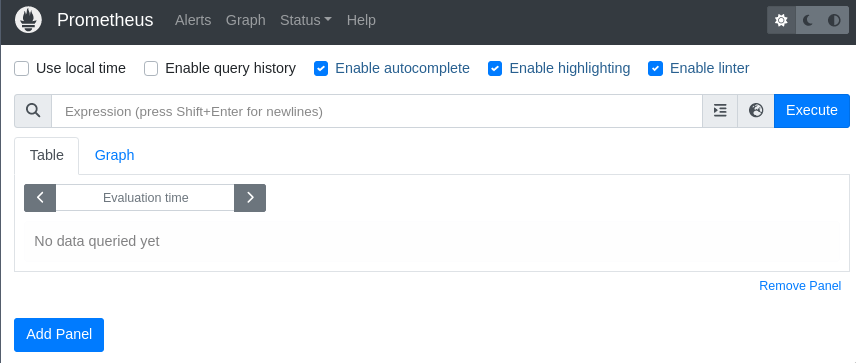
Список объектов мониторинга можно увидеть на странице localhost:8889/targets:
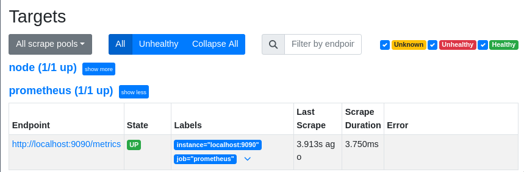
Чтобы ознакомиться со списком доступных метрик можно нажать на кнопку
metrics explorer слева от кнопки Execute:
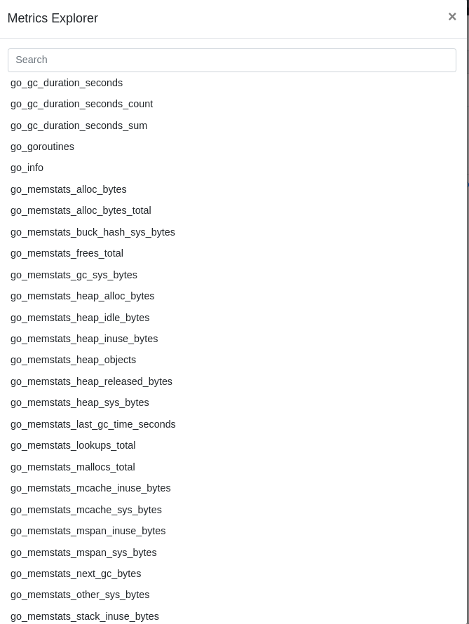
Как видно, список довольно большой. Выберем метрику go_info, которая выдает
информацию о используемой версии golang при сборке:
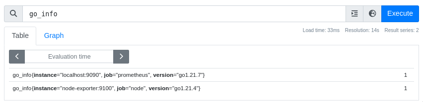
В качестве языка запросов используется PromQL, который позволяет производить
различные выборки по временным рядам. Например, для просмотра свободного места
на файловой системе в корневом разделе можно воспользоваться запросом
node_filesystem_avail_bytes{mountpoint="/"}:
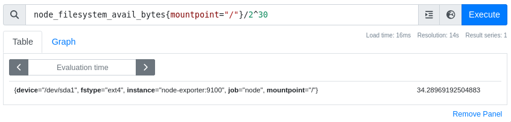
Обычно метрики в базе хранятся в системе СИ и данные о файловой системе
хранятся в байтах, так что требуются дополнительные преобразования для вывода
значений в ГБ. Сравним эти значения с выводом утилиты df:
$ df -hT /
Filesystem Type Size Used Avail Use% Mounted on
/dev/sda1 ext4 39G 4.4G 35G 12% /
Запишем 5ГБ данных и проверим результат:
$ dd if=/dev/zero of=big_file bs=1M count=5120
5120+0 records in
5120+0 records out
5368709120 bytes (5.4 GB, 5.0 GiB) copied, 5.36085 s, 1.0 GB/s
$ df -hT /
Filesystem Type Size Used Avail Use% Mounted on
/dev/sda1 ext4 39G 9.4G 30G 25% /
После чего можем удалить файл:
$ rm big_file
Спустя некоторое время на вкладке Graph можем увидеть процесс изменения места
на файловой системе:
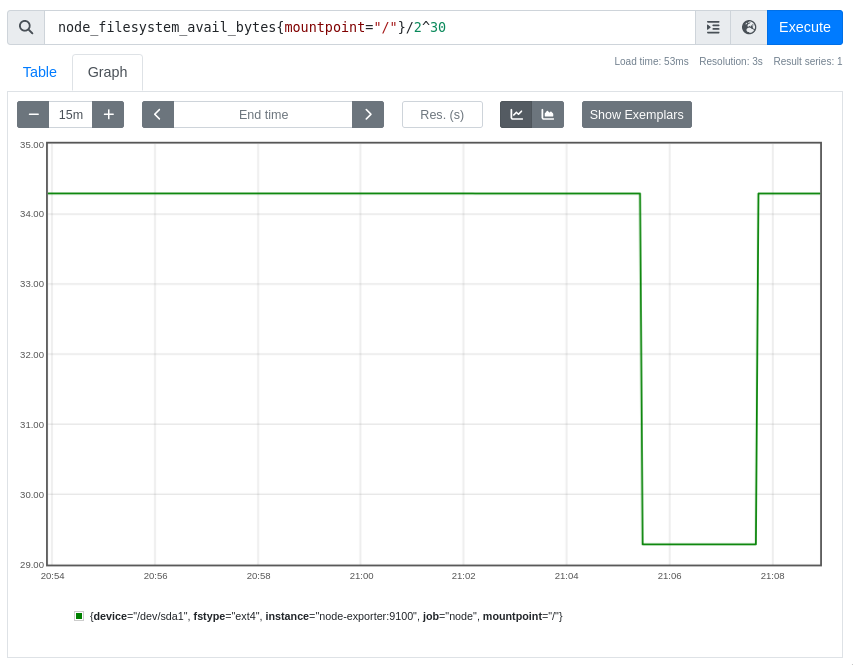
Grafana
Добавим дополнительное средство визуализации метрик в нашу инсталляцию -
grafana. Для этого дополним compose.yaml:
name: mon
services:
prometheus:
image: prom/prometheus:v2.50.1
ports:
- 8889:9090
volumes:
- ./prometheus.yml:/etc/prometheus/prometheus.yml
- prometheus_data:/prometheus
grafana:
image: grafana/grafana:10.4.0
ports:
- 8888:3000
node-exporter:
image: prom/node-exporter:v1.7.0
command:
- '--path.procfs=/host/proc'
- '--path.rootfs=/rootfs'
- '--path.sysfs=/host/sys'
- '--collector.filesystem.mount-points-exclude=^/(sys|proc|dev|host|etc)($$|/)'
volumes:
- /proc:/host/proc:ro
- /sys:/host/sys:ro
- /:/rootfs:ro
volumes:
prometheus_data: {}
$ docker compose up -d
[+] Running 3/3
✔ Container mon-grafana-1 Started 0.4s
✔ Container mon-node-exporter-1 Running 0.0s
✔ Container mon-prometheus-1 Running 0.0s
После запуска grafana будет доступна по адресу
localhost:8888, где в ней можно авторизоваться с
использованием стандартной пары логин и пароль - admin/admin.
После авторизации нам понадобится добавить наш prometheus в качестве
источника данных в grafana, для этого необходимо перейти
в раздел connections/datasources
и нажать кнопку Add data source, после чего выбрать тип Prometheus и
заполнить адрес http://prometheus:9090:
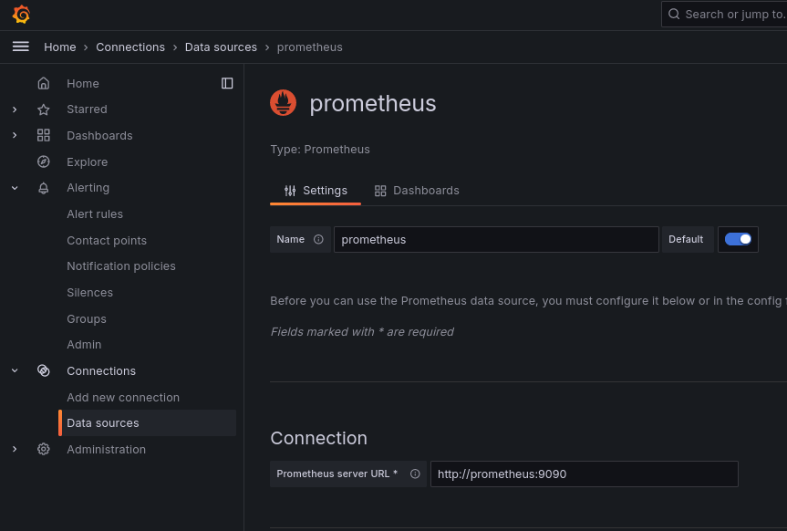
В конце нажав кнопку Save & test:
После чего все метрики из prometheus будут доступны в grafana.
Посмотреть доступные метрики можно на странице
explore:
Либо используя режим builder
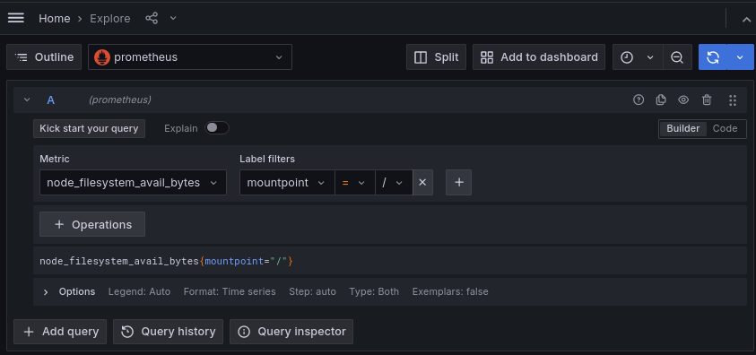
Либо используя режим code указывая запрос на языке promql
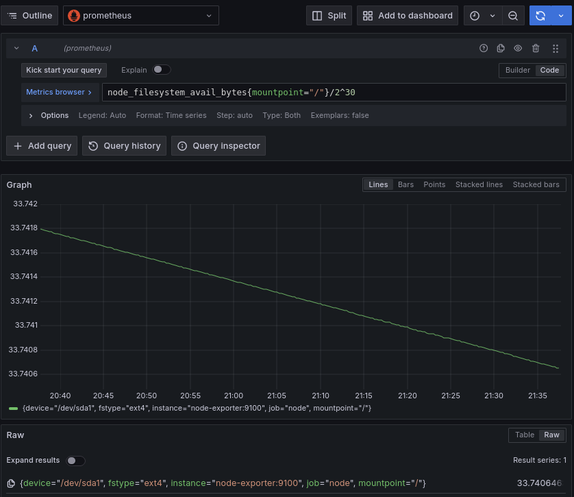
Dashboard
Также для визуализации можно создать дашборд на странице
dashboards. Добавим новую визуализацию,
в которой зададим запрос на promql для отображения графика по изменению
свободного места на файловой системе. Зададим заголовок, Unit в котором хранится
метрика, а также можем задать custom легенду для указания на дашборде.
После чего сохраним нажав Apply.
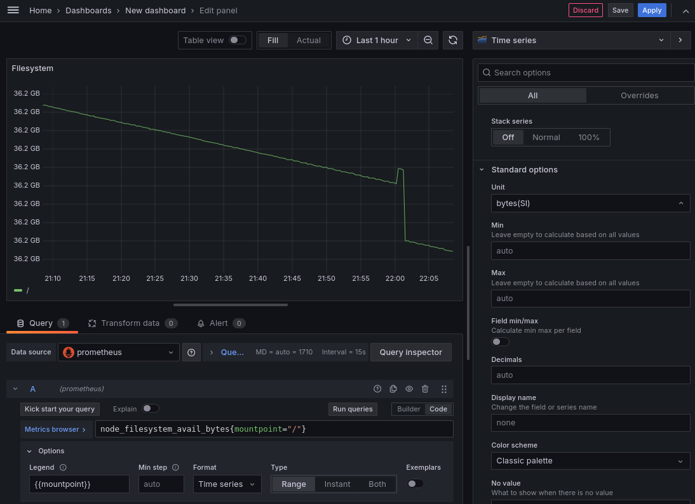
Добавим новую визуализацию для отображения графика по потреблению CPU,
для этого воспользуемся метрикой node_cpu_seconds_total, которая считает
время проведенное процессором в каждом режиме для каждого ядра.
Таким образом общий счетчик времени в режиме бездействия можно посмотреть
запросом node_cpu_seconds_total{mode="idle"}, а для процентного отображения
можно воспользоваться функцией rate, которая покажет насколько увеличился
счетчик за одну секунду в заданный период. В итоге мы можем с помощью запроса
1-rate(node_cpu_seconds_total{mode="idle"}[1m]) увидеть процентное потребление
по каждому ядру процессора.
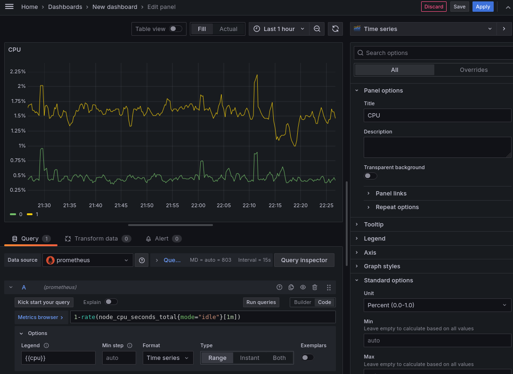
Добавим также визуализация для потребления оперативной памяти добавив в нее
два запроса: общее количество памяти на виртуальной машине -
node_memory_MemTotal_bytes и количество потребляемой памяти -
node_memory_MemTotal_bytes-node_memory_MemAvailable_bytes.
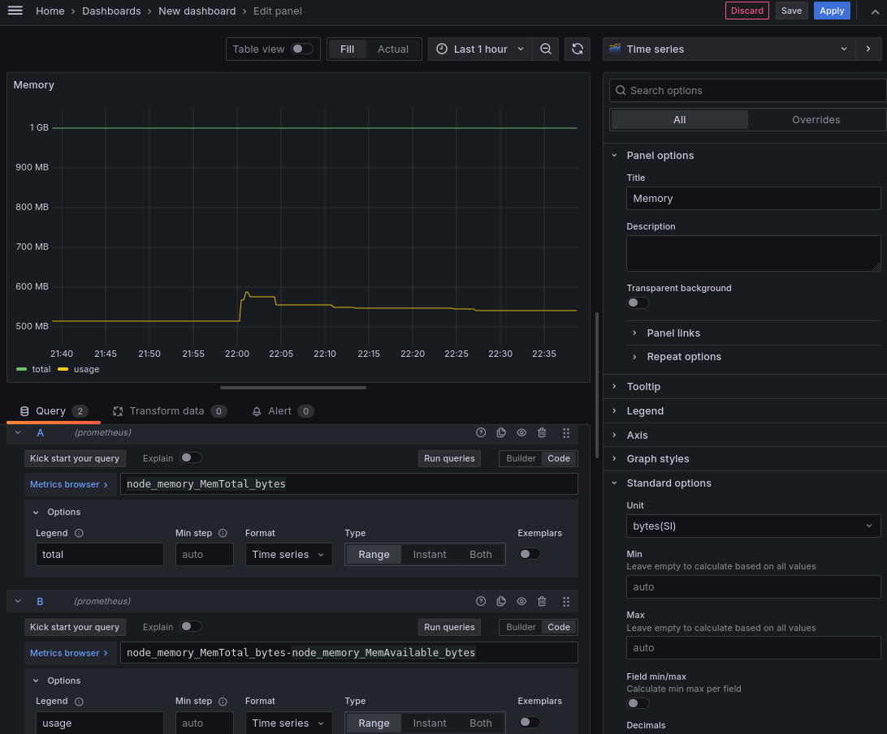
В итоге получим следующий дашборд:
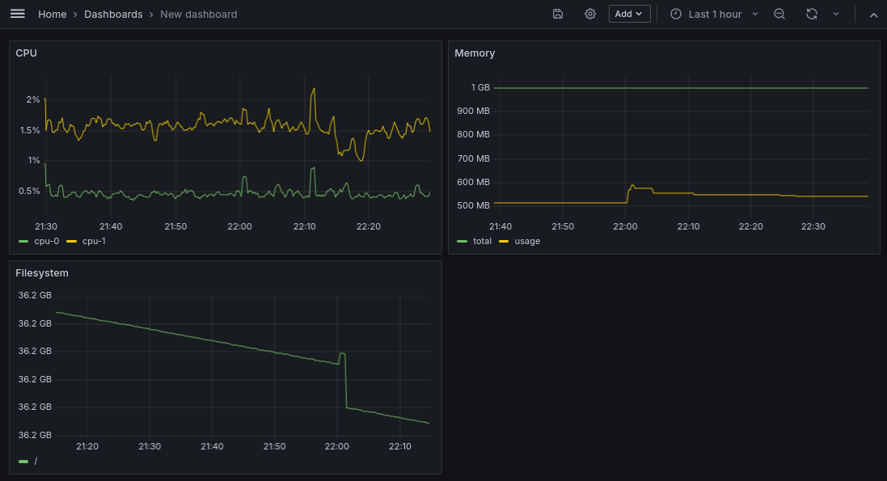
После чего можно сохранить дашборд нажав на иконку дискеты.
App metrics
Сделаем простое приложение, которое будет принимать http запросы и с некоторой
вероятностью возвращать ошибку, а также будет отдавать метрики в формате
prometheus. Пример на golang может быть следующим в main.go:
package main
import (
"math/rand"
"net/http"
"github.com/prometheus/client_golang/prometheus"
"github.com/prometheus/client_golang/prometheus/promhttp"
)
func main() {
reqTotal := prometheus.NewCounterVec(
prometheus.CounterOpts{Name: "app_req_total"},
[]string{"code"},
)
prometheus.MustRegister(reqTotal)
http.Handle("/metrics", promhttp.Handler())
http.Handle("/", http.HandlerFunc(func(w http.ResponseWriter, r *http.Request) {
if rand.Intn(10) > 0 {
w.WriteHeader(200)
w.Write([]byte("OK\n"))
reqTotal.WithLabelValues("200").Inc()
return
}
w.WriteHeader(500)
w.Write([]byte("NE OK\n"))
reqTotal.WithLabelValues("500").Inc()
}))
http.ListenAndServe(":8080", nil)
}
Также добавим Dockerfile для сборки:
FROM golang:1.21 as build
WORKDIR /src
COPY main.go /src/main.go
RUN go mod init example \
&& go mod tidy \
&& CGO_ENABLED=0 go build -o /bin/app ./main.go
FROM scratch
COPY --from=build /bin/app /app
CMD ["/app"]
И добавим приложение в compose.yaml:
name: mon
services:
prometheus:
image: prom/prometheus:v2.50.1
ports:
- 8889:9090
volumes:
- ./prometheus.yml:/etc/prometheus/prometheus.yml
- prometheus_data:/prometheus
grafana:
image: grafana/grafana:10.4.0
ports:
- 8888:3000
node-exporter:
image: prom/node-exporter:v1.7.0
command:
- '--path.procfs=/host/proc'
- '--path.rootfs=/rootfs'
- '--path.sysfs=/host/sys'
- '--collector.filesystem.mount-points-exclude=^/(sys|proc|dev|host|etc)($$|/)'
volumes:
- /proc:/host/proc:ro
- /sys:/host/sys:ro
- /:/rootfs:ro
app:
image: test
build: .
ports:
- 8080:8080
volumes:
prometheus_data: {}
А также в конфигурацию prometheus.yml:
global:
scrape_interval: 15s
scrape_configs:
- job_name: 'prometheus'
scrape_interval: 1m
static_configs:
- targets: ['localhost:9090']
- job_name: 'node'
static_configs:
- targets: ['node-exporter:9100']
- job_name: 'app'
static_configs:
- targets: ['app:8080']
Запустим:
$ docker restart mon-prometheus-1
mon-prometheus-1
$ docker compose up -d
[+] Running 4/4
✔ Container mon-app-1 Started 0.6s
✔ Container mon-grafana-1 Running 0.0s
✔ Container mon-node-exporter-1 Running 0.0s
✔ Container mon-prometheus-1 Running 0.0s
После чего в prometheus на странице targets можно увидеть наше приложение:
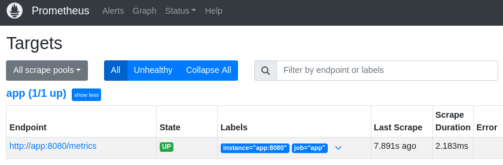
А в момент сборки увидеть потребление ресурсов на дашборде:
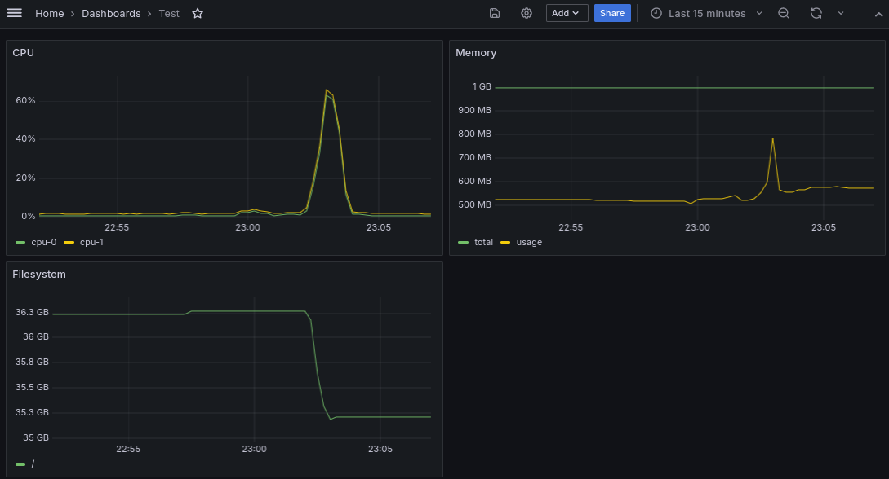
Обратимся к нашему приложению из терминала:
$ for i in {1..100};do curl localhost:8080;done
OK
OK
OK
OK
OK
OK
OK
OK
OK
OK
OK
OK
OK
OK
OK
OK
OK
NE OK
OK
...
Как видно приложение просто возвращает ответ 200 OK и с некоторой вероятностью ответ 500 NE OK. Для просмотра метрик необходимо обратиться к эндпоинту /metrics:
$ curl localhost:8080/metrics
# HELP app_req_total
# TYPE app_req_total counter
app_req_total{code="200"} 95
app_req_total{code="500"} 5
# HELP go_gc_duration_seconds A summary of the pause duration of garbage collection cycles.
# TYPE go_gc_duration_seconds summary
go_gc_duration_seconds{quantile="0"} 6.7428e-05
go_gc_duration_seconds{quantile="0.25"} 0.000103126
go_gc_duration_seconds{quantile="0.5"} 0.000108896
go_gc_duration_seconds{quantile="0.75"} 0.000115438
go_gc_duration_seconds{quantile="1"} 0.000146137
go_gc_duration_seconds_sum 0.000541025
go_gc_duration_seconds_count 5
# HELP go_goroutines Number of goroutines that currently exist.
# TYPE go_goroutines gauge
go_goroutines 7
# HELP go_info Information about the Go environment.
# TYPE go_info gauge
go_info{version="go1.21.8"} 1
# HELP go_memstats_alloc_bytes Number of bytes allocated and still in use.
# TYPE go_memstats_alloc_bytes gauge
go_memstats_alloc_bytes 2.073528e+06
# HELP go_memstats_alloc_bytes_total Total number of bytes allocated, even if freed.
# TYPE go_memstats_alloc_bytes_total counter
go_memstats_alloc_bytes_total 8.224104e+06
# HELP go_memstats_buck_hash_sys_bytes Number of bytes used by the profiling bucket hash table.
# TYPE go_memstats_buck_hash_sys_bytes gauge
go_memstats_buck_hash_sys_bytes 4250
# HELP go_memstats_frees_total Total number of frees.
# TYPE go_memstats_frees_total counter
go_memstats_frees_total 36883
# HELP go_memstats_gc_sys_bytes Number of bytes used for garbage collection system metadata.
# TYPE go_memstats_gc_sys_bytes gauge
go_memstats_gc_sys_bytes 3.681824e+06
# HELP go_memstats_heap_alloc_bytes Number of heap bytes allocated and still in use.
# TYPE go_memstats_heap_alloc_bytes gauge
go_memstats_heap_alloc_bytes 2.073528e+06
# HELP go_memstats_heap_idle_bytes Number of heap bytes waiting to be used.
# TYPE go_memstats_heap_idle_bytes gauge
go_memstats_heap_idle_bytes 4.530176e+06
# HELP go_memstats_heap_inuse_bytes Number of heap bytes that are in use.
# TYPE go_memstats_heap_inuse_bytes gauge
go_memstats_heap_inuse_bytes 3.432448e+06
# HELP go_memstats_heap_objects Number of allocated objects.
# TYPE go_memstats_heap_objects gauge
go_memstats_heap_objects 1361
# HELP go_memstats_heap_released_bytes Number of heap bytes released to OS.
# TYPE go_memstats_heap_released_bytes gauge
go_memstats_heap_released_bytes 3.653632e+06
# HELP go_memstats_heap_sys_bytes Number of heap bytes obtained from system.
# TYPE go_memstats_heap_sys_bytes gauge
go_memstats_heap_sys_bytes 7.962624e+06
# HELP go_memstats_last_gc_time_seconds Number of seconds since 1970 of last garbage collection.
# TYPE go_memstats_last_gc_time_seconds gauge
go_memstats_last_gc_time_seconds 1.7102744046326103e+09
# HELP go_memstats_lookups_total Total number of pointer lookups.
# TYPE go_memstats_lookups_total counter
go_memstats_lookups_total 0
# HELP go_memstats_mallocs_total Total number of mallocs.
# TYPE go_memstats_mallocs_total counter
go_memstats_mallocs_total 38244
# HELP go_memstats_mcache_inuse_bytes Number of bytes in use by mcache structures.
# TYPE go_memstats_mcache_inuse_bytes gauge
go_memstats_mcache_inuse_bytes 2400
# HELP go_memstats_mcache_sys_bytes Number of bytes used for mcache structures obtained from system.
# TYPE go_memstats_mcache_sys_bytes gauge
go_memstats_mcache_sys_bytes 15600
# HELP go_memstats_mspan_inuse_bytes Number of bytes in use by mspan structures.
# TYPE go_memstats_mspan_inuse_bytes gauge
go_memstats_mspan_inuse_bytes 63168
# HELP go_memstats_mspan_sys_bytes Number of bytes used for mspan structures obtained from system.
# TYPE go_memstats_mspan_sys_bytes gauge
go_memstats_mspan_sys_bytes 65184
# HELP go_memstats_next_gc_bytes Number of heap bytes when next garbage collection will take place.
# TYPE go_memstats_next_gc_bytes gauge
go_memstats_next_gc_bytes 4.3168e+06
# HELP go_memstats_other_sys_bytes Number of bytes used for other system allocations.
# TYPE go_memstats_other_sys_bytes gauge
go_memstats_other_sys_bytes 401862
# HELP go_memstats_stack_inuse_bytes Number of bytes in use by the stack allocator.
# TYPE go_memstats_stack_inuse_bytes gauge
go_memstats_stack_inuse_bytes 425984
# HELP go_memstats_stack_sys_bytes Number of bytes obtained from system for stack allocator.
# TYPE go_memstats_stack_sys_bytes gauge
go_memstats_stack_sys_bytes 425984
# HELP go_memstats_sys_bytes Number of bytes obtained from system.
# TYPE go_memstats_sys_bytes gauge
go_memstats_sys_bytes 1.2557328e+07
# HELP go_threads Number of OS threads created.
# TYPE go_threads gauge
go_threads 5
# HELP process_cpu_seconds_total Total user and system CPU time spent in seconds.
# TYPE process_cpu_seconds_total counter
process_cpu_seconds_total 0.12
# HELP process_max_fds Maximum number of open file descriptors.
# TYPE process_max_fds gauge
process_max_fds 1.048576e+06
# HELP process_open_fds Number of open file descriptors.
# TYPE process_open_fds gauge
process_open_fds 9
# HELP process_resident_memory_bytes Resident memory size in bytes.
# TYPE process_resident_memory_bytes gauge
process_resident_memory_bytes 1.2488704e+07
# HELP process_start_time_seconds Start time of the process since unix epoch in seconds.
# TYPE process_start_time_seconds gauge
process_start_time_seconds 1.7102737835e+09
# HELP process_virtual_memory_bytes Virtual memory size in bytes.
# TYPE process_virtual_memory_bytes gauge
process_virtual_memory_bytes 1.26386176e+09
# HELP process_virtual_memory_max_bytes Maximum amount of virtual memory available in bytes.
# TYPE process_virtual_memory_max_bytes gauge
process_virtual_memory_max_bytes 1.8446744073709552e+19
# HELP promhttp_metric_handler_requests_in_flight Current number of scrapes being served.
# TYPE promhttp_metric_handler_requests_in_flight gauge
promhttp_metric_handler_requests_in_flight 1
# HELP promhttp_metric_handler_requests_total Total number of scrapes by HTTP status code.
# TYPE promhttp_metric_handler_requests_total counter
promhttp_metric_handler_requests_total{code="200"} 43
promhttp_metric_handler_requests_total{code="500"} 0
promhttp_metric_handler_requests_total{code="503"} 0
Наша метрика app_req_total показывает количество запросов в разрезе разных
кодов возврата. Также библиотека добавляет набор метрик golang runtime.
Добавим визуализацию метрик приложения на наш дашборд.
Общий процент ошибок:
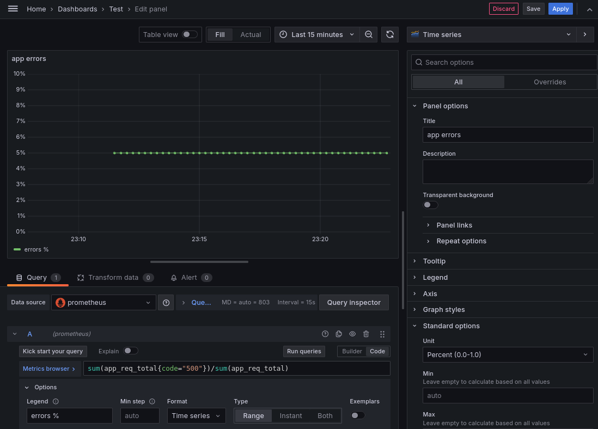
И количество запросов в секунду:
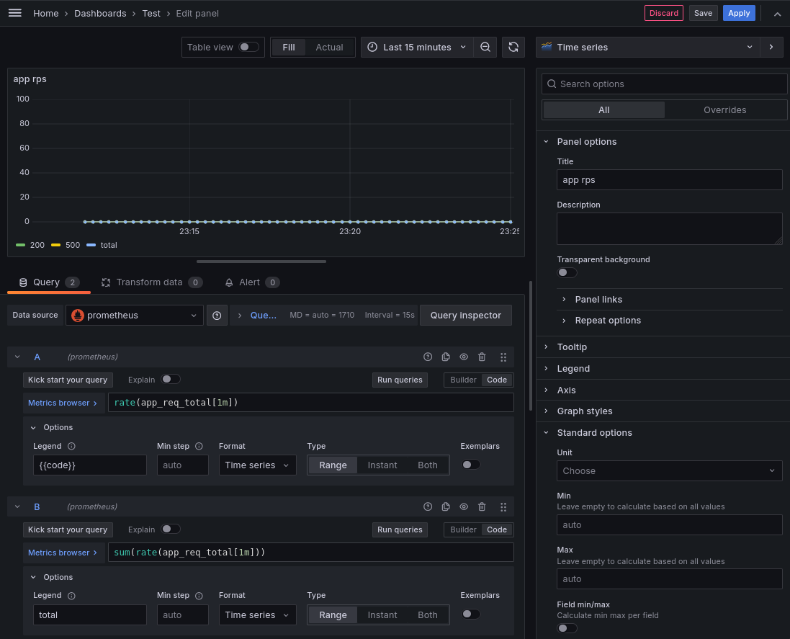
Сгруппировать визуализации можно добавив Row:
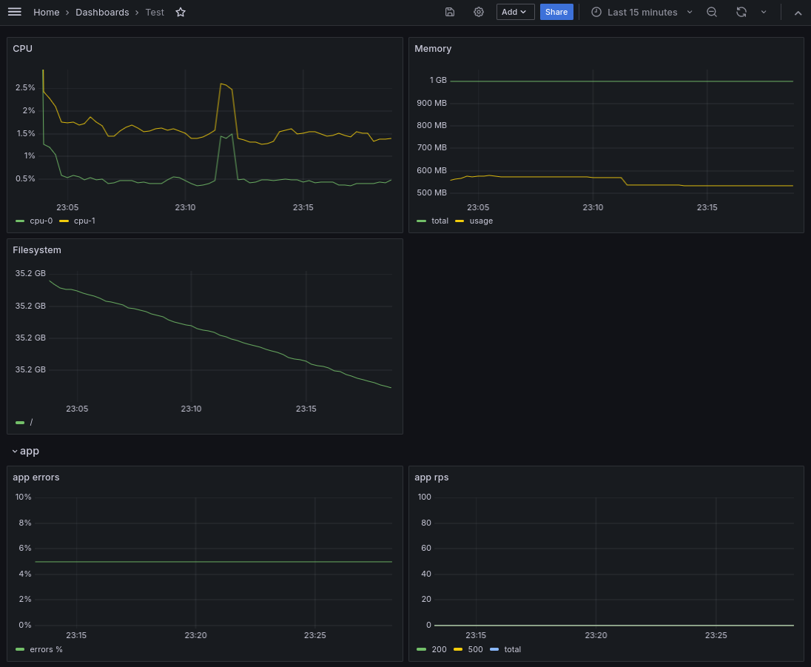
Запустим в цикле запросы к нашему приложению, чтобы посмотреть как изменятся графики:
$ while sleep .3;do curl localhost:8080;done
OK
OK
OK
OK
OK
OK
OK
OK
OK
OK
OK
OK
NE OK
OK
...
Спустя некоторое время посмотрим на наш дашборд:
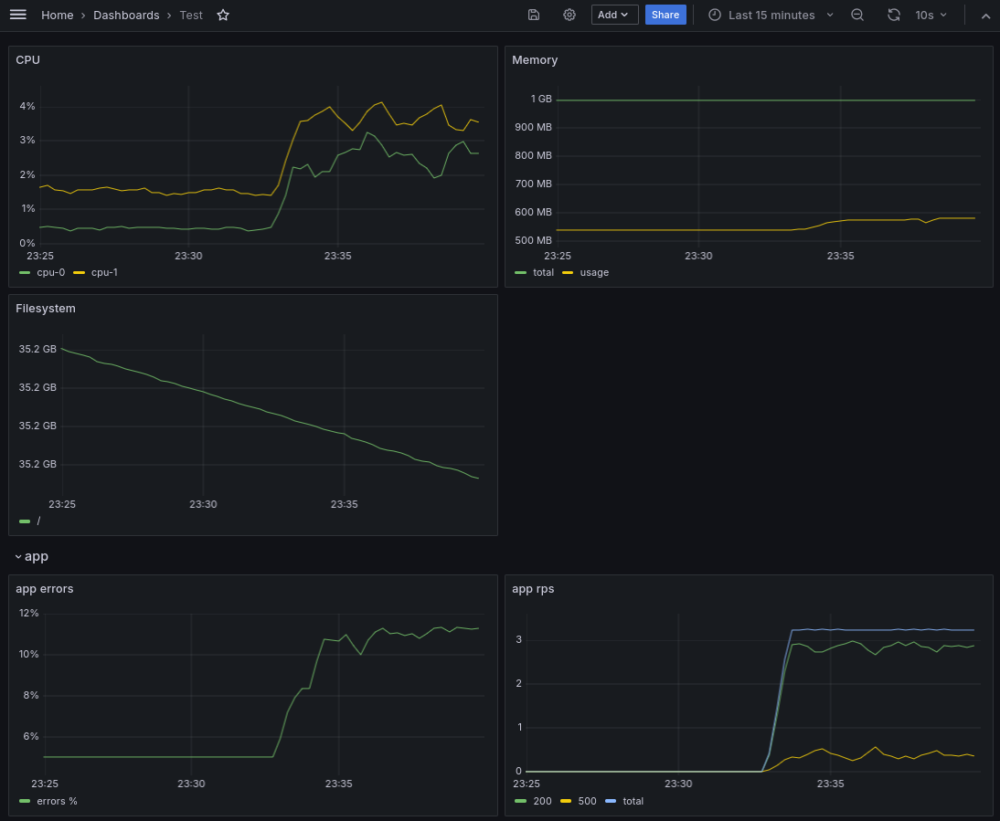
На графиках можно заметить изменение потребления ресурсов, а также метрики нашего приложения. Попробуем увеличить частоту запросов и оставим еще на некоторое время:
$ while sleep .1;do curl localhost:8080;done
OK
OK
OK
OK
OK
OK
OK
OK
OK
OK
NE OK
OK
...
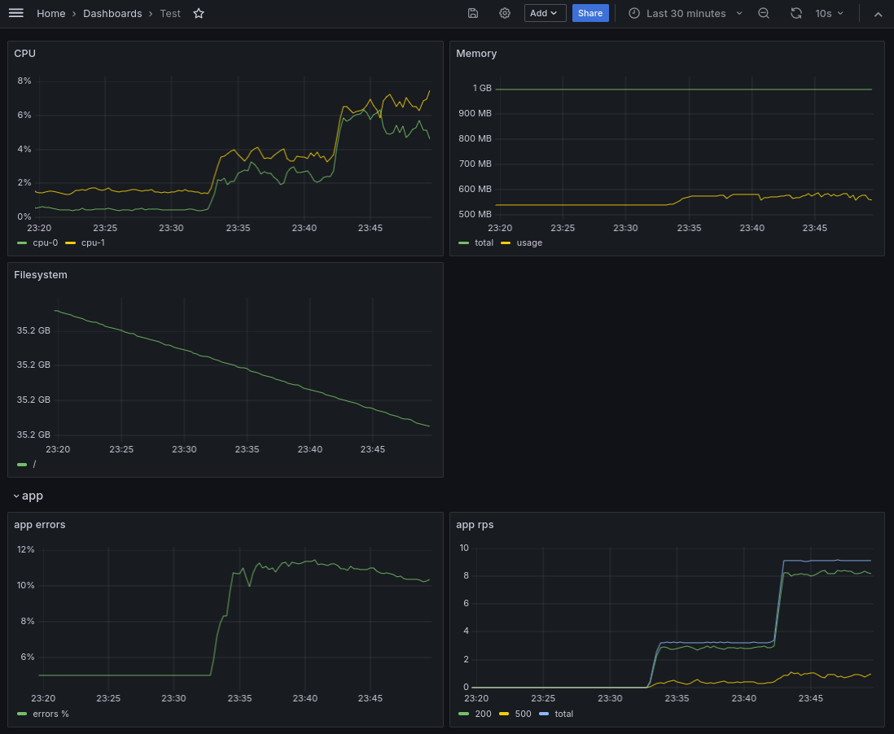
Как видно потребление CPU и rps увеличились, а процент ошибок все также в районе 10%, как и указано у нас в коде. После прерывания цикла запросов, то мы увидим падение на графиках по CPU и rps:
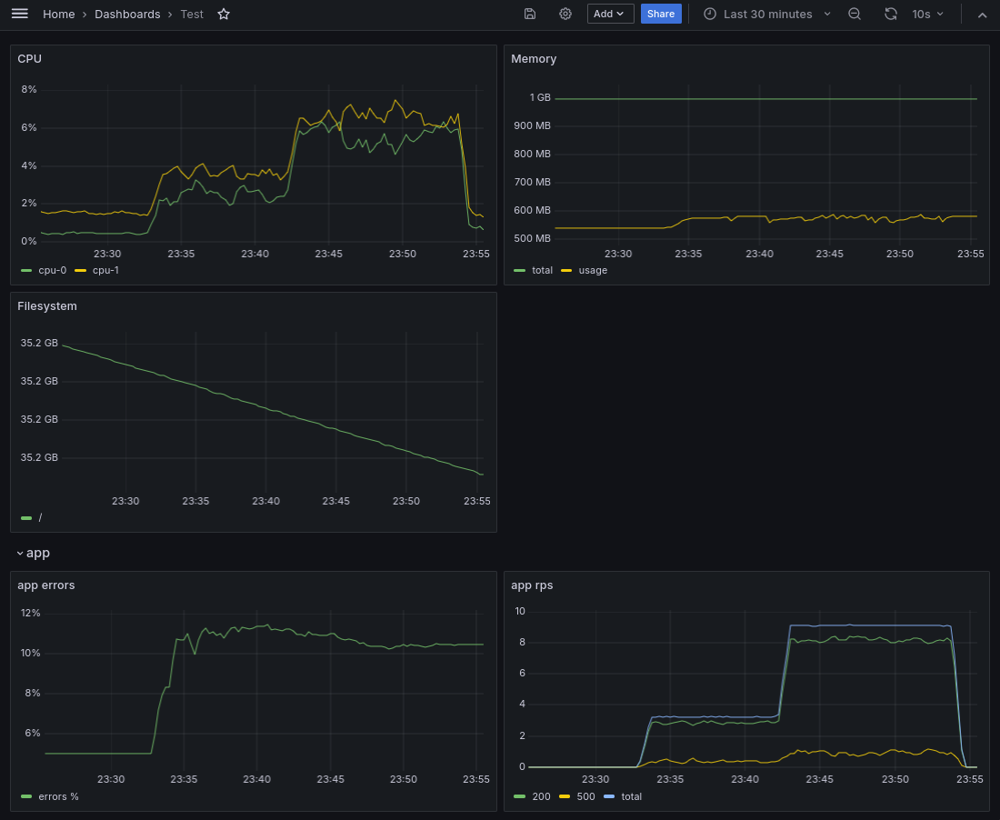
Таким образом с помощью prometheus и grafana можно визуализировать и отслеживать различные метрики инфраструктуры и приложений.